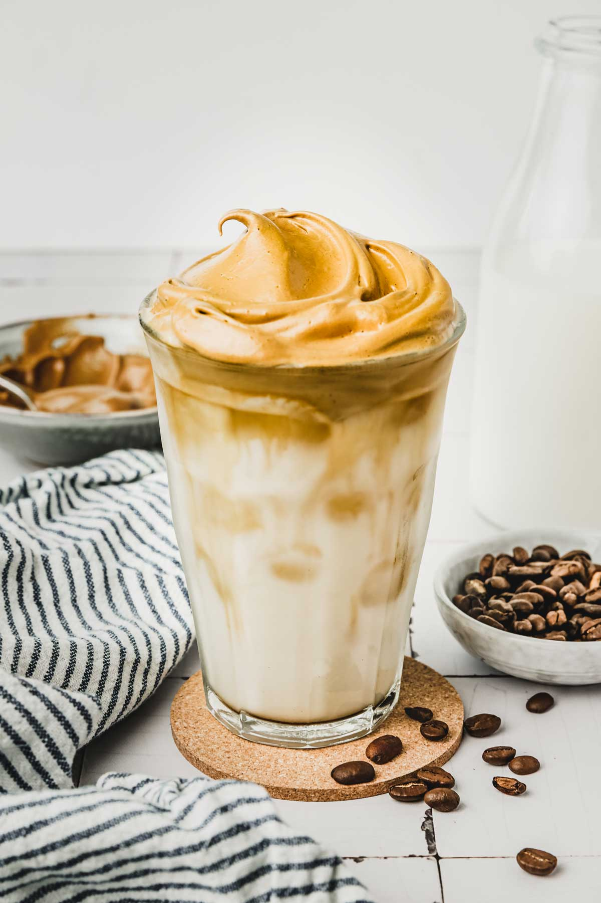

Recipe
Dalgona Coffee

Steps of how to make the Dalgona Coffee:
- Add sugar to a cup.
- Add coffee grounds to a cup.
- Add water to a cup.
- Stir it till it is creamy.
- Add milk to a new glass.
- Add the creamy coffee mixture to the glass.
- Stir well and enjoy your dalgona coffee!
Ingredients:
- Water
- Coffee grounds
- Milk
- Sugar
| Ingredient |
Quantity |
| Water: |
4 tablespoons |
| Coffee grounds: |
4 tablespoons (optional) |
| Milk: |
1 cup |
| Sugar: |
4 teaspoon (optional) |
Video how to make Dalgona Coffee:
Go Back